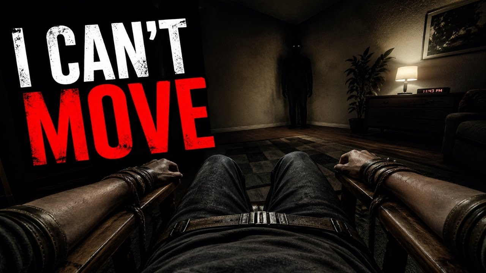
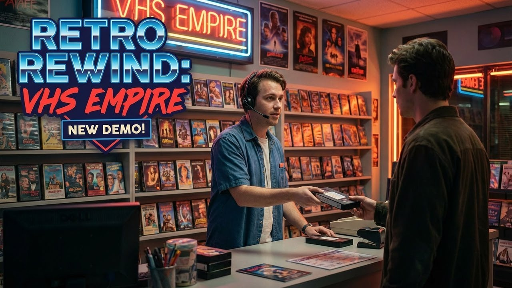
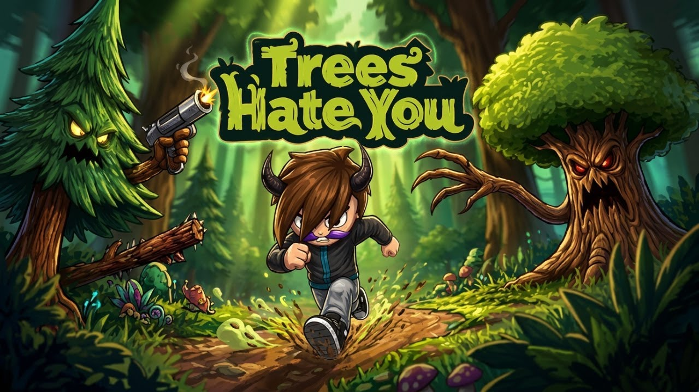
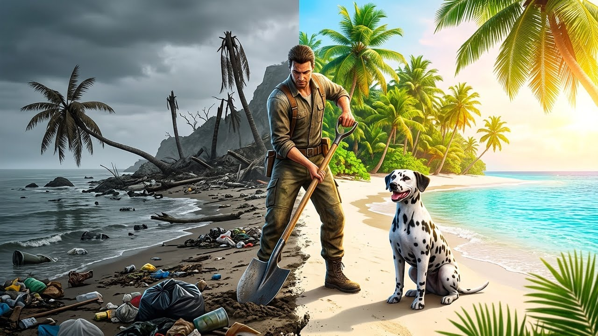

Creepy Shift: Uncle Joe's Motel
A creepy motel shift turns into a tense horror experience filled with strange encounters and unsettling moments.
Watch on YouTubeThe ZacharyAtom channel focuses on entertaining gameplay experiences, horror reactions, simulator content, and memorable moments that feel natural instead of scripted.
A creepy motel shift turns into a tense horror experience filled with strange encounters and unsettling moments.
Watch on YouTube
A claustrophobic anomaly-horror game where atmosphere, tension, and limited movement make every moment feel worse.
Watch on YouTube
A retro video store simulator with old-school style, VHS atmosphere, and strange moments before Netflix existed.
Watch on YouTube
A brutal forest gameplay experience where the trees are the problem, survival is frustrating, and the chaos keeps building.
Watch on YouTube
Building and managing a casino turns into a chaotic simulator experience with plenty of unpredictable moments.
Watch on YouTube
A relaxing island restoration game focused on rebuilding, exploration, and creating a more peaceful gameplay experience.
Watch on YouTube